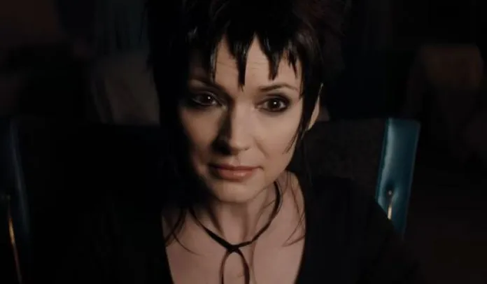
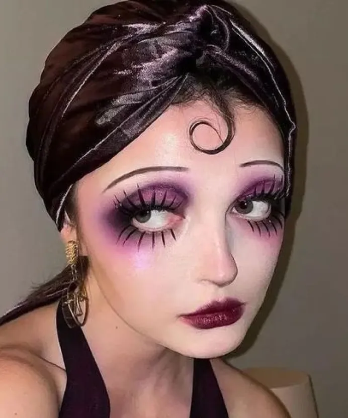
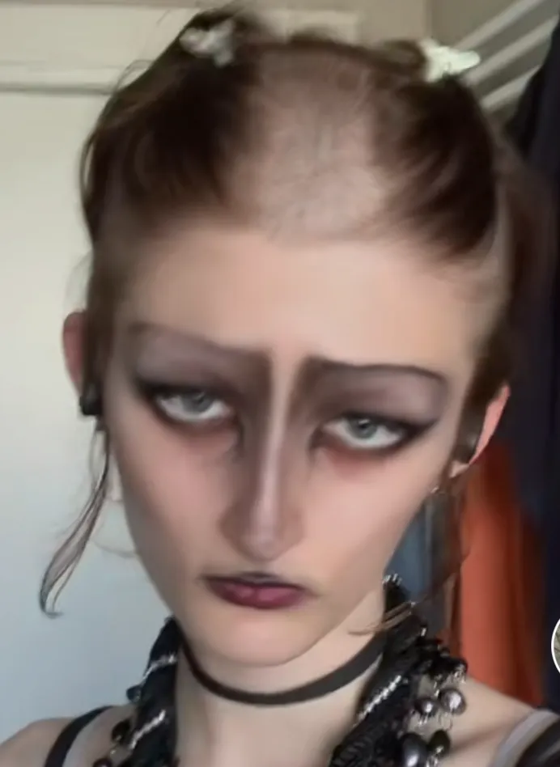

Tim Burton : Pionnier du maquillage virtuel au cinéma
L'esthétique singulière de Tim Burton a préfiguré l'ère du maquillage virtuel, transformant notre perception de la beauté au cinéma.
Par Alice Frelin
Publié le 21 octobre 2024 à 22h30
Freepik.fr
Une esthétique visionnaire
Tim Burton, réalisateur emblématique connu pour son esthétique gothique et fantaisiste, a longtemps été à l'avant-garde du maquillage cinématographique excentrique.
Aujourd'hui, à l'aube de l'ère du maquillage virtuel, son travail prend une nouvelle dimension, apparaissant comme un précurseur visionnaire de la transformation numérique de la beauté.
Photogramme de Beetlejuice - Burton (2024)
Une influence durable
Les personnages emblématiques de Burton, avec leurs yeux surdimensionnés, leurs teints pâles et leurs traits exagérés, semblent presque sortir d'un filtre de réalité augmentée moderne
Des films comme Edward aux mains d'argent ou Alice au pays des merveilles présentent des looks qui, autrefois considérés comme fantastiques, sont aujourd'hui réalisables en quelques clics grâce aux technologies de maquillage virtuel.

Photogramme de Alice au pays des merveilles - Burton (2010)
L'approche de Burton en matière de maquillage a toujours repoussé les limites du possible, anticipant involontairement l'ère où la transformation virtuelle instantanée deviendrait une réalité
Ses créations, qui nécessitaient autrefois des heures de travail minutieux avec des prothèses et du maquillage traditionnel, peuvent maintenant être reproduites en temps réel grâce à la réalité augmentée.
Le style distinctif de Burton, caractérisé par des contrastes marqués et des traits accentués, trouve un écho dans les filtres populaires d'aujourd'hui. Son esthétique unique a influencé toute une génération de créateurs de contenu digital, qui s'inspirent de ses personnages pour créer des filtres ou des looks captivants.
Un maquillage inspiré par l’univers de Tim Burton :
@intohercoffin sur Tikok©
Dans le contexte actuel du maquillage virtuel, l'œuvre de Burton peut être vue comme une forme de "préhistoire du futur".
Ses visions excentriques, autrefois considérées comme purement fantaisistes, sont devenues des inspirations tangibles pour les créateurs de maquillage virtuel et les utilisateurs de filtres AR.
Un filtre tiktok inspiré par l’univers de Tim Burton :
@a_personn_i_think sur Tiktok©
Alors que nous entrons dans une ère où le maquillage physique pourrait devenir obsolète, remplacé par des alternatives virtuelles plus versatiles et écologiques, l'héritage de Burton dans le domaine du maquillage prend une nouvelle signification.
Son travail nous rappelle que l'imagination et la créativité restent au cœur de l'expression personnelle, que ce soit à travers des techniques traditionnelles ou des technologies de pointe.
Tim Burton, avec son style unique et avant-gardiste, a non seulement marqué l'histoire du cinéma, mais a aussi, sans le savoir, posé les jalons d'une révolution dans le monde du maquillage virtuel. Son influence continue de se faire sentir, inspirant les innovations qui façonnent l'avenir de la beauté numérique.
Films les plus notoires
Édouard aux mains d'argent